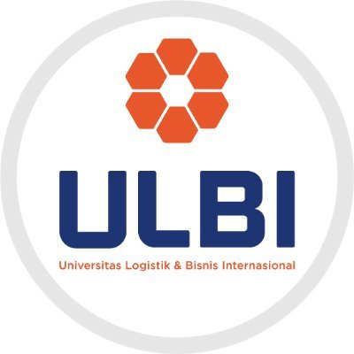

 Universitas Logistik dan Bisnis Internasional (ULBI) hasil merger dari Politeknik Pos Indonesia (POLTEKPOS) dan Sekolah Tinggi Manajemen Logistik Indonesia (STIMLOG) Berdasarkan Surat Keputusan Menteri Pendidikan, Kebudayaan, Riset, dan Teknologi Republik Indonesia Nomor 334/E/O/2022 yang ditetapkan di Jakarta pada tanggal 24 Mei 2022. ULBI merupakan Perguruan Tinggi Pertama di Indonesia yang berfokus pada keilmuan bidang Logistik, Manajemen Rantai Pasok, E-Commerce, dan Bisnis.